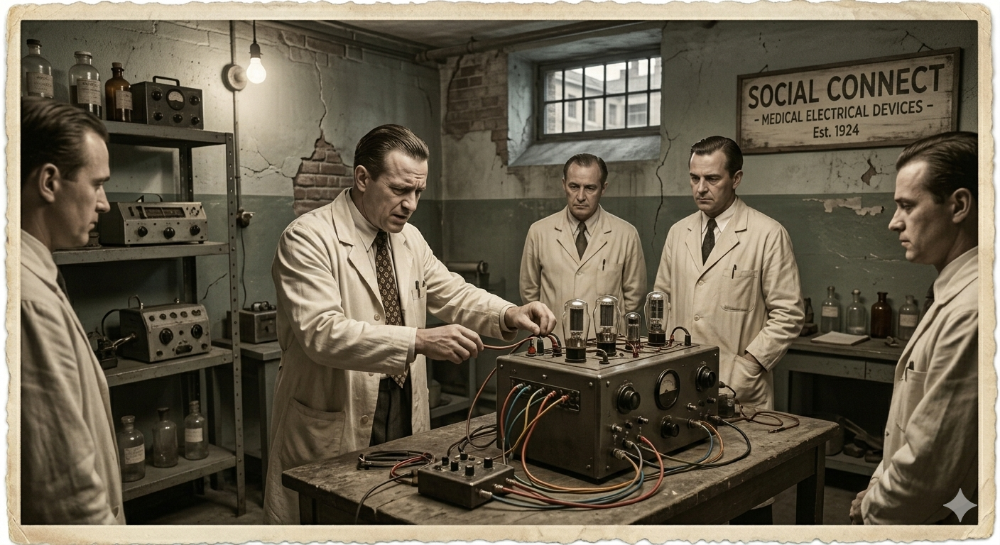
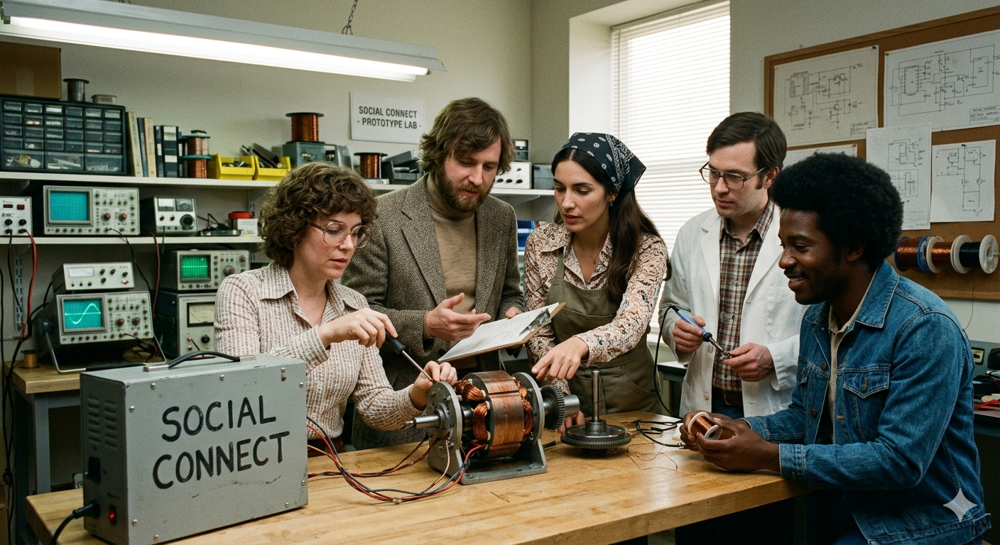
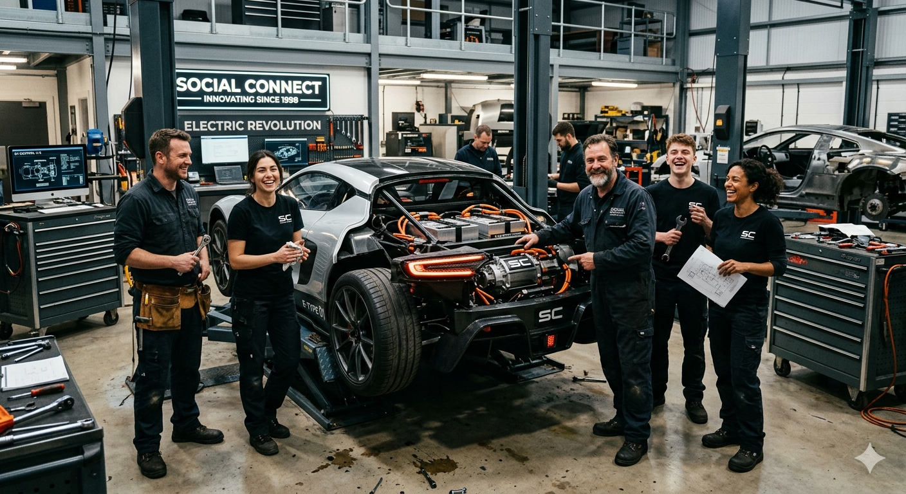
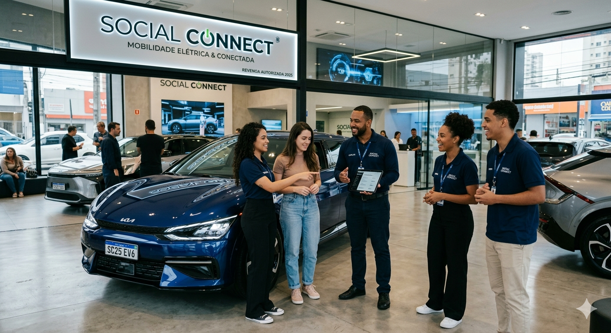
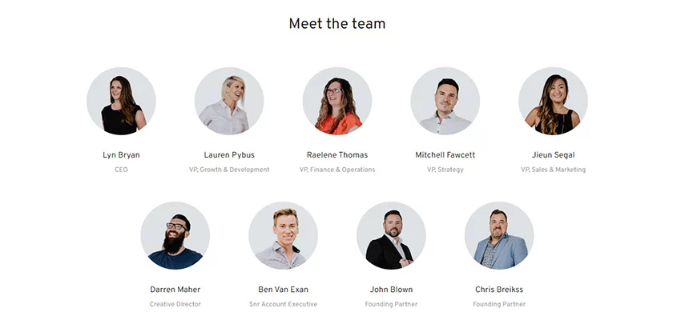

A Nossa Historia
Fundada em 1934, a Social Connect iniciou sua trajetória sob uma ótica sombria e puramente funcional, fabricando aparelhos rudimentares de "choqueterapia" para sanatórios europeus, baseando sua engenharia na entrega de descargas elétricas precisas e no controle rigoroso de voltagem para o que a medicina da época considerava "reconexão social" de pacientes. Com o avanço da ética médica e a descoberta de tratamentos químicos nas décadas de 50 e 60, a empresa enfrentou o colapso iminente, mas seus engenheiros, que haviam se tornado mestres em gerenciar picos de energia e capacitores em ambientes de alta fidelidade, decidiram redirecionar o domínio da eletricidade para a mobilidade urbana, transformando os antigos motores de indução e sistemas de controle de carga em protótipos de propulsão veicular. Durante os anos de crise do petróleo, a marca se reinventou silenciosamente, abandonando o estigma clínico para abraçar a sustentabilidade e, ao entrar no século XXI, utilizou seu legado quase centenário de manipulação de fluxos elétricos para desenvolver baterias de densidade sem precedentes, culminando na criação dos carros elétricos mais sofisticados do mundo, onde o nome "Social Connect" finalmente deixou de representar uma intervenção médica forçada para simbolizar a integração tecnológica global através de uma rede de transporte limpa e ultrarrápida.




Nossa Equipe
A equipe da Social Connect é composta por profissionais altamente qualificados e apaixonados por tecnologia e comunicação. Estamos sempre trabalhando duro para garantir que nossa plataforma seja segura, confiável e fácil de usar.

Fale Conosco
Quer saber mais sobre carros elétricos? Nossa equipe está pronta para te ajudar.